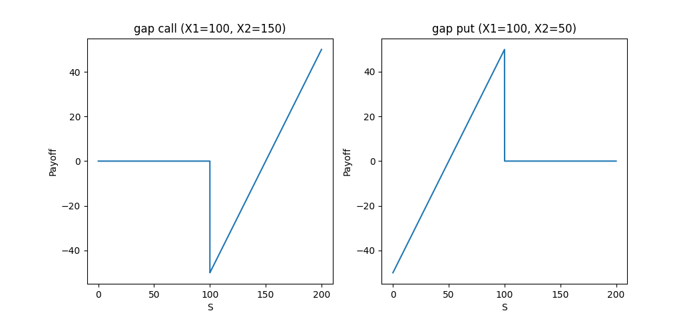
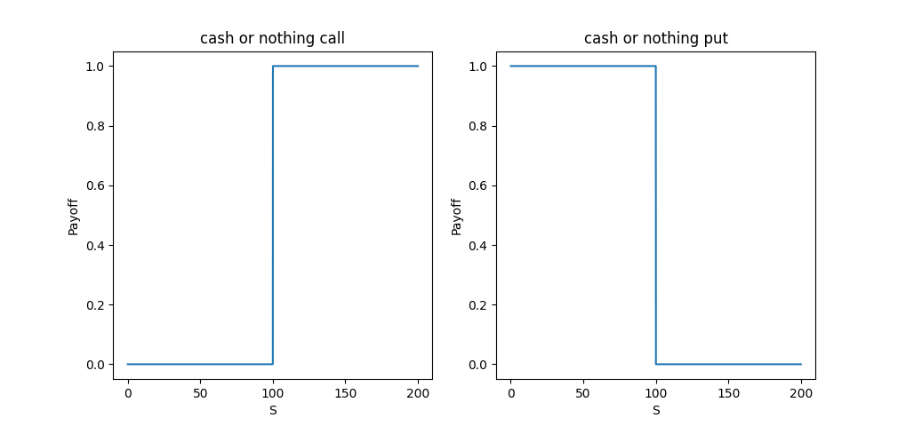
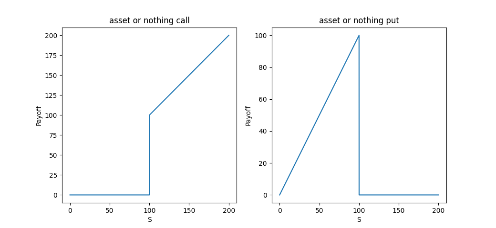

常见奇异期权释义及其（近似）解析解实现
Contents
常见奇异期权释义及其（近似）解析解实现#
二元期权#
二元期权又可分为 gap option , cash or nothing option 以及 asset or nothing option 。
跳跃二元期权的收益图
现金二元期权的收益图：
资产二元期权的收益图：
美式期权#
美式期权指的期权持有者可以在期权存续期间的任何时间点行权的期权。期权公式大全(page 97~109)中共列出了三种美式期权的近似解析解公式: Barone-Adesi and Whaley(1987) (BAW), Bjerksund and Stensland (1993) (BS1993) 与 Bjerksund and Stensland (2002) （BS2002）。从运算效率上讲， BS1993 是推荐的方法。
Note
期权公式大全一书中美式期权的实现是采用VBA，给出的测试案例的结果精度并不是特别高。
亚式期权#
亚式期权根据平均方法的不同分为几何平均亚式期权与算数平均亚式期权，其中算数平均亚式期权更为常见；根据平均对象的不同，又可分为浮动行权价亚式期权与固定行权价亚式期权。
亚式期权类型 |
平均方式 |
到期收益 |
近似解析解公式 |
固定行权价连续算数平均亚式期权 |
看涨 \(\text{Max}(S_A - X, 0)\)
看跌 \(\text{Max}(X - S_A, 0)\)
|
1. Turnbull and Wakeman approximation
2. Levy’s approximation
|
|
固定行权价离散算数平均亚式期权 |
\(S_A = \frac{\sum_{i=1}^{N}S_i}{N}\) |
看涨 \(\text{Max}(S_A - X, 0)\)
看跌 \(\text{Max}(X - S_A, 0)\)
|
1. Levy 1997
2. Curran approximation
|
浮动行权价亚式期权 |
看涨 \(\text{Max}(S - S_A, 0)\)
看跌 \(\text{Max}(S_A - S, 0)\)
|
fixing-floating Asian Symmetry |
回望式期权#
回望期权类型 |
到期收益 |
说明 |
(部分期限) 浮动行权价回望期权 |
看涨 \(S - S_{min}\)
看跌 \(S_{max} - S\)
|
部分期限浮动行权价的采价期限短于期权总期限，因而更便宜 |
(部分期限) 固定行权价回望期权 |
看涨 \(\text{Max}(S_{max} - X, 0)\)
看跌 \(\text{Max}(X - S_{min}, 0)\)
|
部分期限固定行权价的采价期限短于期权总期限， 因而更便宜 |
标准障碍期权#
标准障碍期权，分为向上/向下-敲出/敲入-看涨/看跌共 \(2^3=8\) 种。
期权名称 |
收益描述 |
向下敲入看涨期权
down and in call
|
如果在存续期间内（before expiration）, 挂钩标的价格（S） 曾 低于过障碍价格(H), 到期收益为 \(\text{Max}(S_T - X, 0)\), 否则到期收益为一笔赔偿金K。 |
向上敲入看涨期权
up and in call
|
如果在存续期间内（before expiration）, 挂钩标的价格（S） 曾 高于过障碍价格(H), 到期收益为 \(\text{Max}(S_T - X, 0)\), 否则到期收益为一笔赔偿金K。 |
向下敲入看跌期权
down and in put
|
如果在存续期间内（before expiration）, 挂钩标的价格（S） 曾 低于过障碍价格(H), 到期收益为 \(\text{Max}(X - S_T, 0)\), 否则到期收益为一笔赔偿金K。 |
向上敲入看跌期权
up and in put
|
如果在存续期间内（before expiration）, 挂钩标的价格（S） 曾 高于过障碍价格(H), 到期收益为 \(\text{Max}(X - S_T, 0)\), 否则到期收益为一笔赔偿金K。 |
向下敲出看涨期权
down and out call
|
如果在存续期间内（before expiration）, 挂钩标的价格（S） 从未 低于过障碍价格(H), 到期收益为 \(\text{Max}(S_T - X, 0)\), 否则到期收益为一笔赔偿金K。 |
向上敲出看涨期权
up and out call
|
如果在存续期间内（before expiration）, 挂钩标的价格（S） 从未 高于过障碍价格(H), 到期收益为 \(\text{Max}(S_T - X, 0)\), 否则到期收益为一笔赔偿金K。 |
向下敲出看跌期权
down and out put
|
如果在存续期间内（before expiration）, 挂钩标的价格（S） 从未 低于过障碍价格(H), 到期收益为 \(\text{Max}(X - S_T, 0)\), 否则到期收益为一笔赔偿金K。 |
向上敲出看跌期权
up and out put
|
如果在存续期间内（before expiration）, 挂钩标的价格（S） 从未 高于过障碍价格(H), 到期收益为 \(\text{Max}(X - S_T, 0)\), 否则到期收益为一笔赔偿金K。 |
二元障碍期权#
二元障碍期权（binary barrier options) 在期权公式大全一书(p170-177) 1 上共列出了28种。我们将这28种有序的归为4大类型
大类 |
主要特点 |
类型 |
类型释义 |
Cash or nothing barrier |
以存续期间是否触碰障碍作为 现金 支付的条件 |
1. Down-and-in cash-(at-hit)-or-nothing
2. Up-and-in cash-(at-hit)-or-nothing
3. Down-and-in cash-(at-expiration)-or-nothing
4. Up-and-in cash-(at-expiration)-or-nothing
5. Down-and-out cash-or-nothing
6. Up-and-out cash-or-nothing
|
1. 存续期间挂钩标的价格低于障碍价格 时， 获得现金收益
2. 存续期间挂钩标的价格高于障碍价格 时， 获得现金收益
3. 存续期间挂钩标的价格 曾 低于障碍价格，到期获得现金收益
4. 存续期间挂钩标的价格 曾 高于障碍价格，到期获得现金收益
5. 存续期间挂钩标的价格 从未 低于障碍价格，到期获得现金收益
6. 存续期间挂钩标的价格 从未 高于障碍价格，到期获得现金收益
|
Asset or nothing barrier |
以存续期间是否触碰障碍作为获得相应挂钩 标的物 的条件 |
7. Down-and-in asset-(at-hit)-or-nothing
8. Up-and-in asset-(at-hit)-or-nothing
9. Down-and-in asset-(at-expiration)-or-nothing
10. Up-and-in asset-(at-expiration)-or-nothing
11. Down-and-out asset-or-nothing
12. Up-and-out asset-or-nothing
|
7. 存续期间挂钩标的价格低于障碍价格 时， 获得挂钩标的物
8. 存续期间挂钩标的价格高于障碍价格 时， 获得挂钩标的物
9. 存续期间挂钩标的价格 曾 低于障碍价格，到期获得挂钩标的物
10. 存续期间挂钩标的价格 曾 高于障碍价格，到期获得挂钩标的物
11. 存续期间挂钩标的价格 从未 低于障碍价格，到期获得挂钩标的物
12. 存续期间挂钩标的价格 从未 高于障碍价格，到期获得挂钩标的物
|
Cash or nothing barrier option |
以存续期间是否触碰障碍作为 现金二元期权 激活的条件 |
13. Down-and-in cash-or-nothing call
14. Up-and-in cash-or-nothing call
15. Down-and-in cash-or-nothing put
16. Up-and-in cash-or-nothing put
17. Down-and-out cash-or-nothing call
18. Up-and-out cash-or-nothing call
19. Down-and-out cash-or-nothing put
20. Up-and-out cash-or-nothing put
|
13. 存续期间挂钩标的价格 曾 低于障碍价格，则转为 现金二元看涨期权
14. 存续期间挂钩标的价格 曾 高于障碍价格，则转为 现金二元看涨期权
15. 存续期间挂钩标的价格 曾 低于障碍价格，则转为 现金二元看跌期权
16. 存续期间挂钩标的价格 曾 高于障碍价格，则转为 现金二元看跌期权
17. 存续期间挂钩标的价格 从未 低于障碍价格，则转为 现金二元看涨期权
18. 存续期间挂钩标的价格 从未 高于障碍价格，则转为 现金二元看涨期权
19. 存续期间挂钩标的价格 从未 低于障碍价格，则转为 现金二元看跌期权
20. 存续期间挂钩标的价格 从未 高于障碍价格，则转为 现金二元看跌期权
|
Asset or nothing barrier option |
以存续期间是否触碰障碍作为 资产二元期权 激活的条件 |
21. Down-and-in asset-or-nothing call
22. Up-and-in asset-or-nothing call
23. Down-and-in asset-or-nothing put
24. Up-and-in asset-or-nothing put
25. Down-and-out asset-or-nothing call
26. Up-and-out asset-or-nothing call
27. Down-and-out asset-or-nothing put
28. Up-and-out asset-or-nothing put
|
21. 存续期间挂钩标的价格 曾 低于障碍价格，则转为 资产二元看涨期权
22. 存续期间挂钩标的价格 曾 高于障碍价格，则转为 资产二元看涨期权
23. 存续期间挂钩标的价格 曾 低于障碍价格，则转为 资产二元看跌期权
24. 存续期间挂钩标的价格 曾 高于障碍价格，则转为 资产二元看跌期权
25. 存续期间挂钩标的价格 从未 低于障碍价格，则转为 资产二元看涨期权
26. 存续期间挂钩标的价格 从未 高于障碍价格，则转为 资产二元看涨期权
27. 存续期间挂钩标的价格 从未 低于障碍价格，则转为 资产二元看跌期权
28. 存续期间挂钩标的价格 从未 高于障碍价格，则转为 资产二元看跌期权
|
双障碍期权#
双障碍期权主要指双向敲出障碍期权（double knock out option, 或者 up out down out option), 期权公式大全(page 156) 给出了双敲出看涨期权与双敲出看跌期权的解析解定价公式。
非连续观察障碍期权#
市场上绝大多数障碍期权并非连续观察，一般均采用以每日收盘价（结算价）与障碍价格比较的方式确定是否敲入或敲出。对于此类障碍期权，我们可以通过Broadie, Glasserman, and Kou(1995) 给出的近似方法，通过调整障碍价格的方式近似地计算期权价值(page 165)。
其中 \(\beta = \zeta (\frac{1}{2})/\sqrt{2\pi} \approx 0.5826\)
参考资料#
- 1
Espen Gaarder Haug, The Complete Guide for Option Pricing Formulas, 2nd ed., McGraw-Hill.